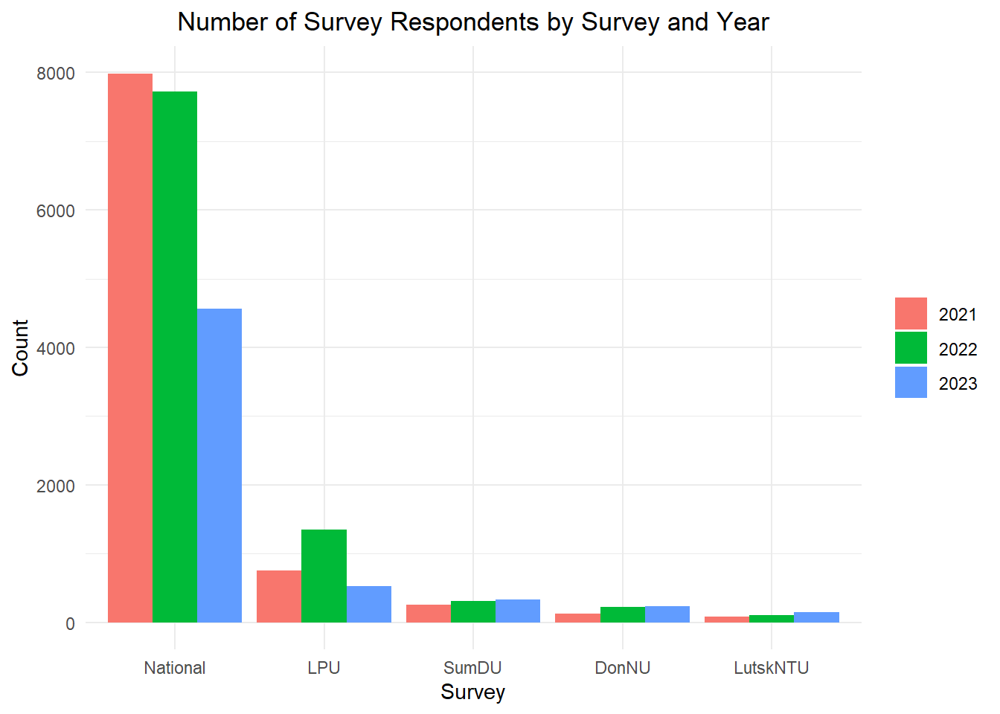
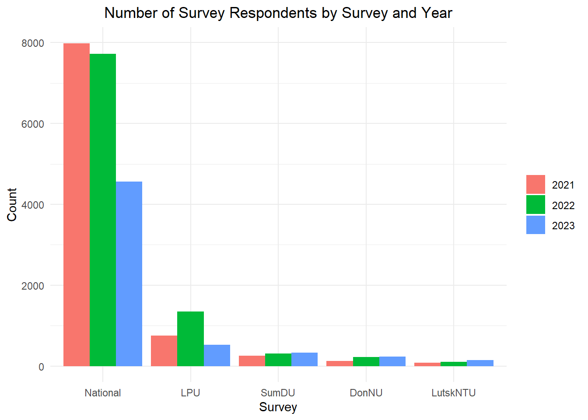
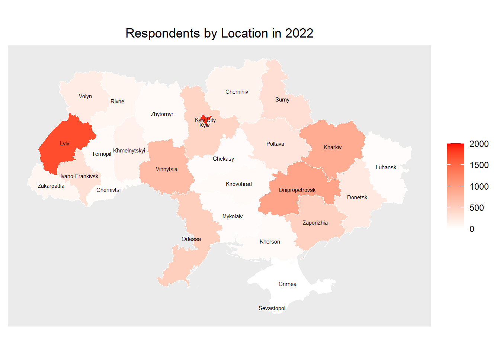
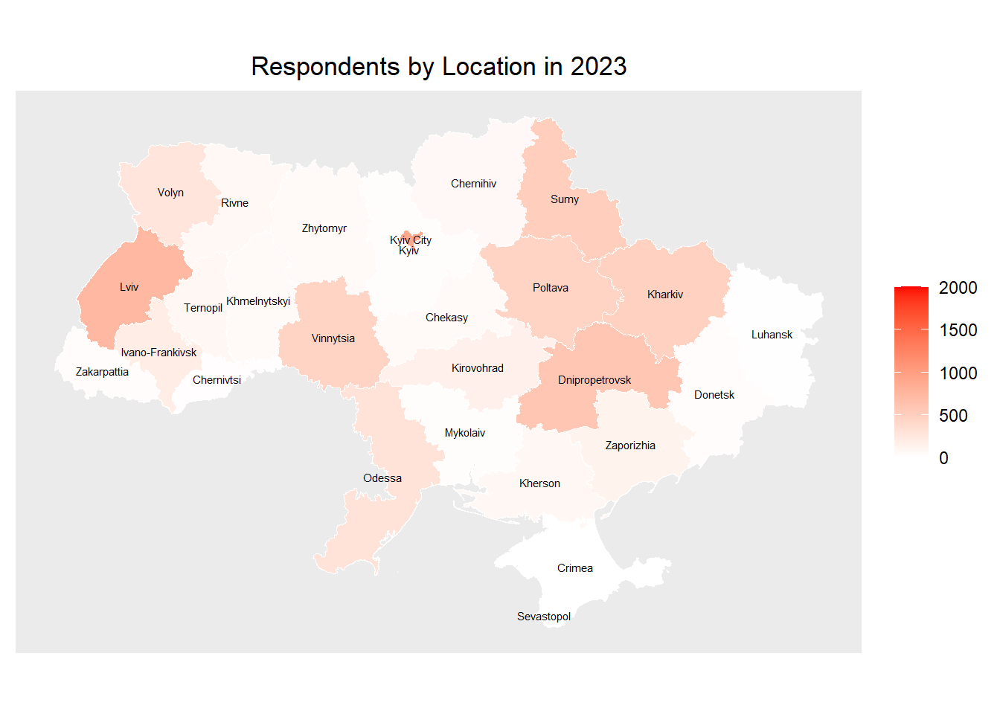
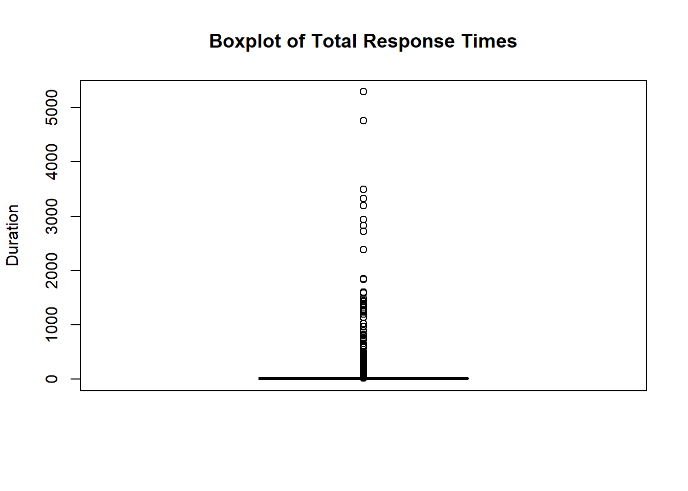
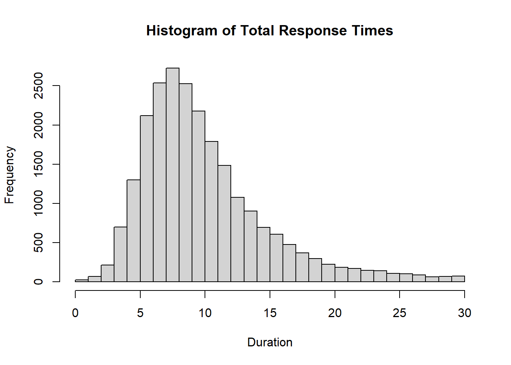
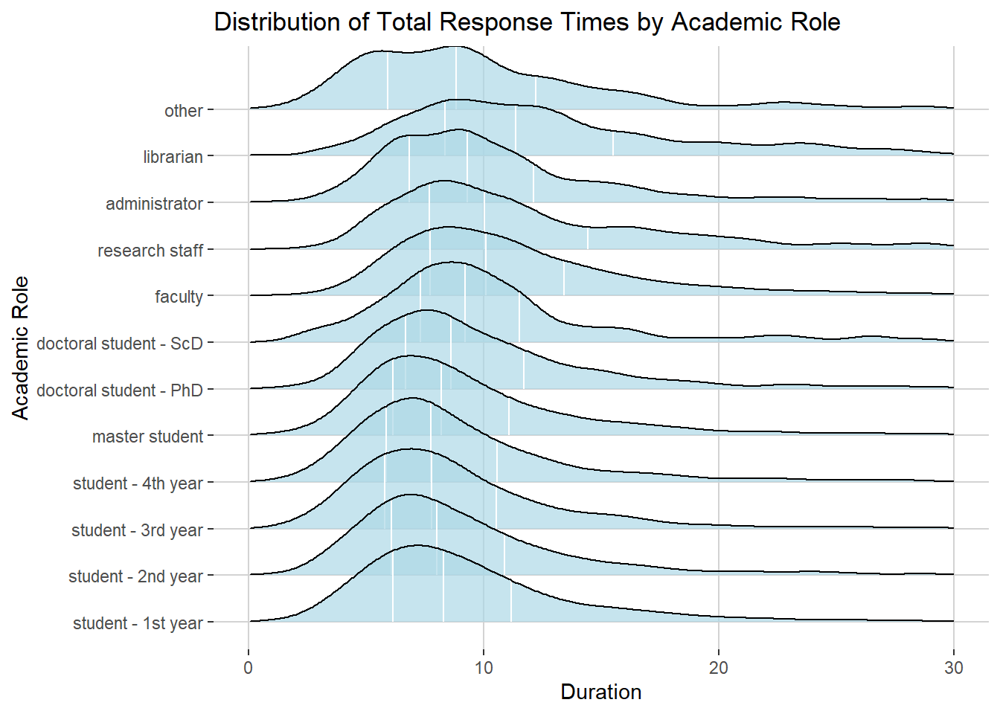
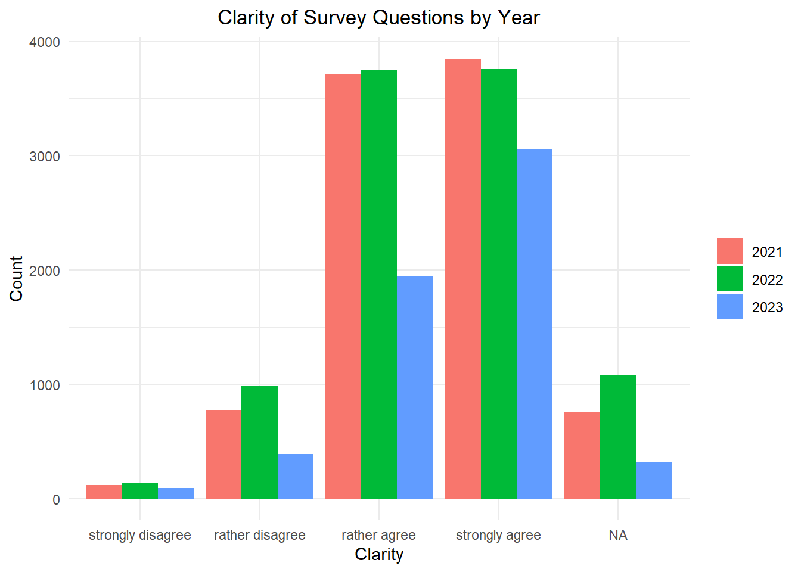
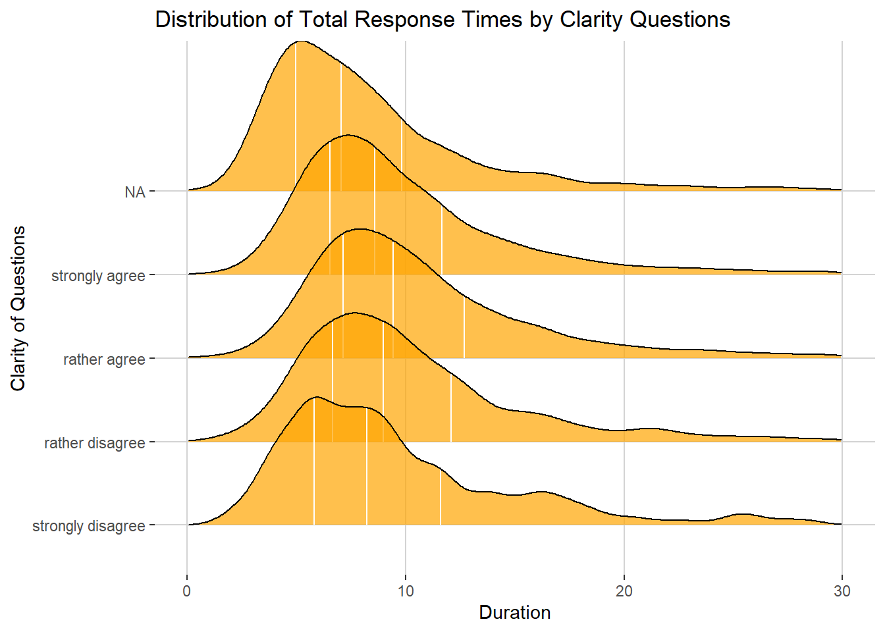

| 2021 | 2022 | 2023 | |
|---|---|---|---|
| National | 7987 | 7727 | 4560 |
| LPU | 754 | 1349 | 530 |
| SumDU | 257 | 306 | 327 |
| DonNU | 125 | 225 | 231 |
| LutskNTU | 80 | 101 | 146 |

The survey included three waves, with one wave each year from 2021 to 2023. In addition to a broad national survey, participants were also specifically recruited at the four higher education institutions that are partners within the OPTIMA project:
| 2021 | 2022 | 2023 | |
|---|---|---|---|
| National | 7987 | 7727 | 4560 |
| LPU | 754 | 1349 | 530 |
| SumDU | 257 | 306 | 327 |
| DonNU | 125 | 225 | 231 |
| LutskNTU | 80 | 101 | 146 |

Participants indicated what they are best described by in terms of academic roles: “Which of the following best describes you?”
| 2021 | 2022 | 2023 | |
|---|---|---|---|
| student - 1st year | 1337 | 1697 | 584 |
| student - 2nd year | 1118 | 1383 | 507 |
| student - 3rd year | 797 | 1326 | 486 |
| student - 4th year | 701 | 970 | 471 |
| master student | 703 | 903 | 691 |
| doctoral student - PhD | 458 | 298 | 342 |
| doctoral student - ScD (higher doctorate) | 44 | 37 | 24 |
| faculty | 3307 | 2522 | 2150 |
| university administrator | 193 | 150 | 156 |
| librarian | 223 | 84 | 90 |
| other | 204 | 122 | 180 |
| NA | 118 | 216 | 113 |
| 2021 | 2022 | 2023 | |
|---|---|---|---|
| female | 6090 | 6007 | 3731 |
| male | 3063 | 3636 | 2017 |
| other | 50 | 65 | 46 |
“What is the highest completed academic degree you have?”
| 2021 | 2022 | 2023 | |
|---|---|---|---|
| none (still studying) | 3731 | 5100 | 1906 |
| bachelor | 973 | 1083 | 779 |
| master | 1150 | 947 | 932 |
| PhD | 2499 | 1932 | 1590 |
| ScD (higher doctorate) | 850 | 646 | 587 |
“How many years have you been working in higher education and/or research?”
| 2021 | 2022 | 2023 | |
|---|---|---|---|
| I have never worked in this sphere | 4379 | 5998 | 2682 |
| less than 1 year | 323 | 229 | 168 |
| 1-5 years | 682 | 525 | 372 |
| 5-10 years | 542 | 378 | 312 |
| more than 10 years | 3277 | 2578 | 2260 |
“What is your field of study or work?”
| 2021 | 2022 | 2023 | |
|---|---|---|---|
| Agricultural and food sciences | 173 | 386 | 105 |
| Architecture and construction | 186 | 304 | 151 |
| Automation and instrumentation | 107 | 113 | 97 |
| Biology | 185 | 197 | 101 |
| Chemical and bioengineering | 234 | 208 | 183 |
| Civil security | 102 | 64 | 36 |
| Culture and art | 256 | 245 | 185 |
| Education/pedagogy | 1462 | 1200 | 885 |
| Electrical engineering | 113 | 193 | 105 |
| Electronics and telecommunications | 100 | 126 | 78 |
| Health care | 871 | 633 | 317 |
| Humanities (religious studies, history and archeology, philosophy, cultural studies, philology) | 752 | 590 | 522 |
| Information technology | 605 | 1081 | 478 |
| Journalism | 56 | 91 | 46 |
| Law | 1145 | 728 | 592 |
| Management and administration | 428 | 484 | 319 |
| Mathematics and statistics | 169 | 202 | 118 |
| Mechanical engineering | 154 | 339 | 170 |
| Military sciences, national security, state border security | 238 | 203 | 44 |
| Natural sciences | 309 | 302 | 188 |
| Production and technology | 142 | 281 | 140 |
| Public management and administration | 178 | 253 | 121 |
| Service industry | 81 | 163 | 83 |
| Social and behavioral sciences (economics, political science, psychology, sociology) | 878 | 886 | 493 |
| Social work | 102 | 115 | 89 |
| Theology | 13 | 10 | 9 |
| Transportation | 91 | 231 | 88 |
| Veterinary medicine | 73 | 80 | 51 |
“How many research outputs (articles, monographs, conference papers) have you published in the last 3 years?”
| 2021 | 2022 | 2023 | |
|---|---|---|---|
| 0 | 3673 | 5165 | 1996 |
| 1-5 | 2094 | 1945 | 1581 |
| 6-10 | 1268 | 1026 | 880 |
| 11-20 | 1159 | 846 | 707 |
| 21-30 | 443 | 313 | 281 |
| more than 30 | 566 | 413 | 349 |
“How many peer reviews of research outputs (articles, monographs, reports) have you written in the last 3 years?”
| 2021 | 2022 | 2023 | |
|---|---|---|---|
| 0 | 5716 | 6929 | 3471 |
| 1-5 | 2237 | 1934 | 1558 |
| 11-20 | 309 | 219 | 216 |
| 21-30 | 120 | 67 | 53 |
| 6-10 | 677 | 481 | 393 |
| more than 30 | 144 | 78 | 103 |
“What type of higher education institution do you study or work at?”
| 2021 | 2022 | 2023 | |
|---|---|---|---|
| agricultural | 377 | 797 | 274 |
| artistic | 114 | 103 | 53 |
| classical | 1780 | 2005 | 1399 |
| cultural | 12 | 21 | 11 |
| economical | 363 | 402 | 180 |
| humanitarian | 203 | 212 | 101 |
| law | 390 | 294 | 201 |
| medical | 668 | 506 | 268 |
| military and internal security (army, police, civil defense, etc.) | 1282 | 596 | 316 |
| other | 259 | 520 | 253 |
| pedagogical | 1517 | 1363 | 975 |
| pharmaceutical | 277 | 55 | 11 |
| physical education and sports | 39 | 84 | 32 |
| technical | 1912 | 2745 | 1710 |
| theological | 10 | 5 | 10 |
“Your higher education institution is located in”…
In 2022, this question was extended to “Your higher education institution is located in (this refers to the original location before 02/24/2022)”. For the 2023 survey, the phrasing of the question was again reduced to the one first employed in 2021.
Spatial data for the country of Ukraine and its Oblasts were retrieved from GADM for visualizations.



Time stamps were collected within the survey for start and finish. Total response duration was calculated as the difference between those two time stamps in minutes. These were examined more closely to estimate the risk of part of the sample only responding superficially and therefore very quickly.
First, basic descriptive statistics are examined for total response time. Additionally, a simple boxplot is created.
| vars | n | mean | sd | median | trimmed | mad | min | max | range | skew | kurtosis | se | |
|---|---|---|---|---|---|---|---|---|---|---|---|---|---|
| X1 | 1 | 24705 | 16.21026 | 84.8998 | 9.066667 | 9.794133 | 4.15128 | 0 | 5289.05 | 5289.05 | 34.04472 | 1524.441 | 0.5401498 |

Especially the range of response times from 0 to over 5000 minutes (about three and a half days) is interesting. There are some outliers where respondents might have had the survey open for some days before finally submitting it. The survey took a median time of about 9 minutes to complete.
To have a closer look at the distribution of total response times, a histogram is created. Only times ranging from 0 to 30 minutes will be plotted for better visibility (extreme outliers are omitted).

Only a small share of respondents finished the survey in less then 3 minutes. The peak in the distribution can be seen between 7 and 8 minutes.
Since different groups in the academic context might vary in their familiarity with the topic, they might differ in their response times. To detect possible pronounced differences, distribution of total response time is plotted separately by academic role indicated (again limiting the range of visualized values from 0 to 30).

While students have a lower median than, e.g., faculty, there are no major differences in distributions upon closer inspection. The groups do not appear substantially different in their response times.
At the end of the survey, one question asked respondents whether they agreed to following statement: “All the questions in this questionnaire were clear to me.”
| 2021 | 2022 | 2023 | |
|---|---|---|---|
| strongly agree | 3846 | 3762 | 3055 |
| rather agree | 3711 | 3749 | 1945 |
| rather disagree | 774 | 984 | 389 |
| strongly disagree | 120 | 132 | 91 |
| don't know | 342 | 538 | 231 |
| NA | 410 | 543 | 83 |

While the survey questions were clear to the large majority of respondents, there is still a considerable number of people disagreeing on this statement.

When investigated in relation to response time, the most notable deviation in distribution can be seen in those not answering the clarity question. These respondents tended to finish the survey more quickly.
However, the number of respondents who took less than three minutes for the survey and indicated low clarity (or did not answer the clarity question) only lies at 88.